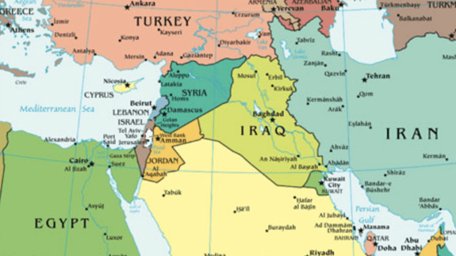
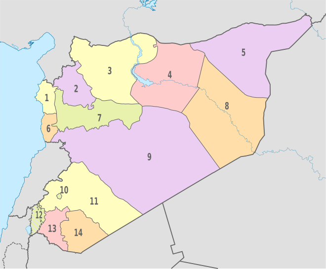
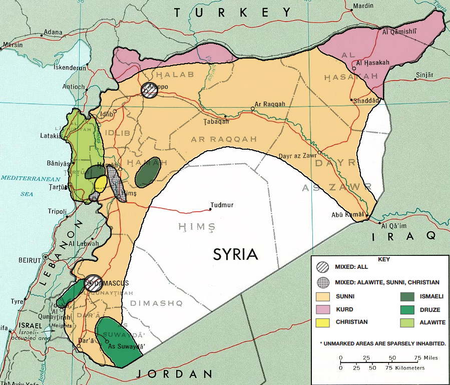

Syria (Arabic: سوريا Sūriyā), officially known as the Syrian Arab Republic
is a country in Western Asia, bordering Lebanon and the Mediterranean Sea
to the west, Turkey to the north, Iraq to the east, Jordan to the south,
and Palestine to the southwest.


Syria is divided into 14 governorates, which are sub-divided into 61
districts, which are further divided into sub-districts.
In English, the name "Syria" was formerly synonymous with the Levant
(known in Arabic as al-Sham),
while the modern state encompasses the sites of
several ancient kingdoms and empires,
including the Eblan civilization of the 3rd millennium BC.
